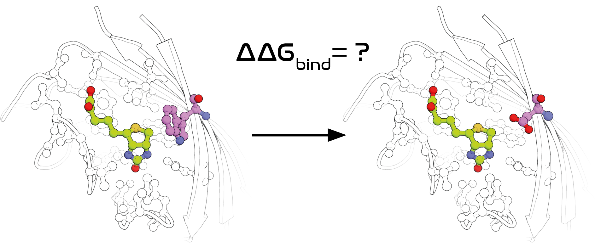
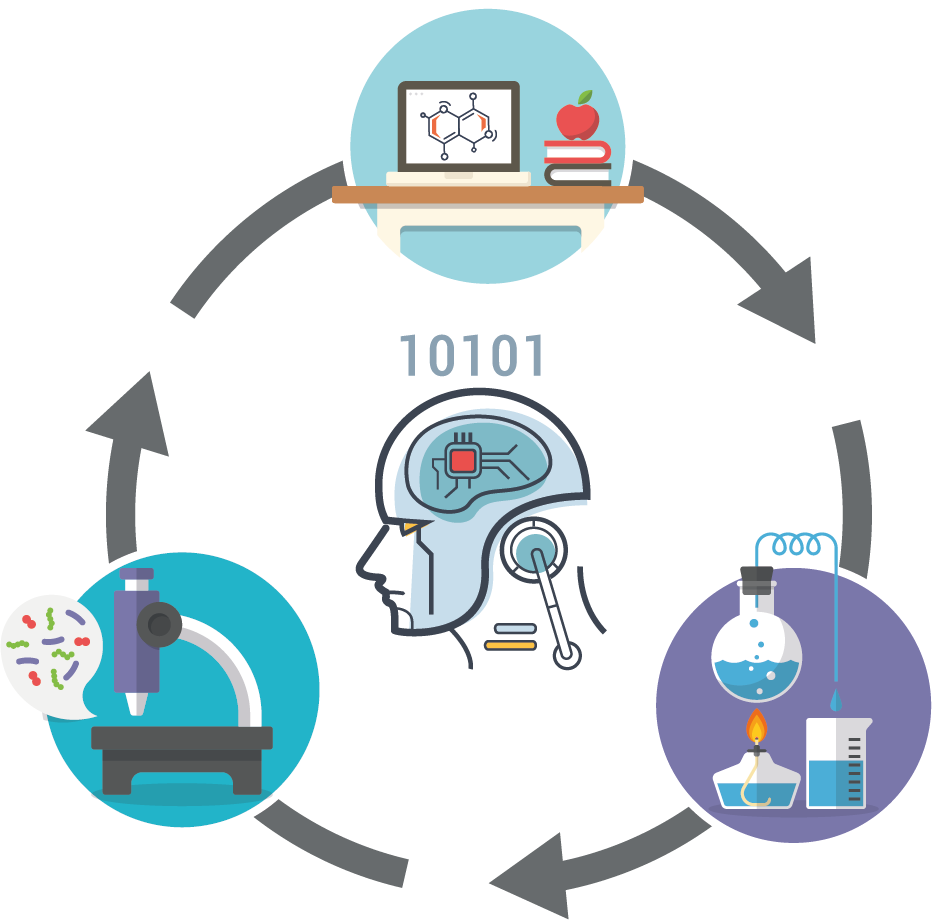
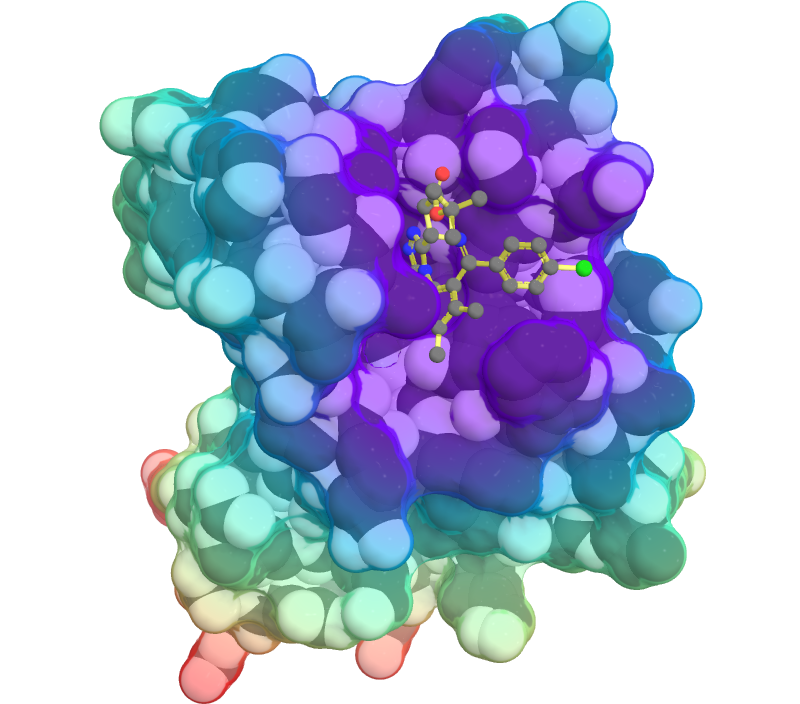

Molecular property prediction
Most broadly, I focus on how computation can be leveraged in the design of organic and biological molecules for biomedical and nanotechnological applications. This often means trying to predict molecular properties. In the past, I've worked on predicting protein-ligand binding affinity with molecular dynamics simulations (Chem. Sci. 2021, Chem. Sci. 2020, JACS 2017, Chem. Sci. 2016), and how affinity changes as a consequence of protein mutation, with both simulations and ML (ACS Cent. Sci. 2018, ACS Cent. Sci. 2019). More recently, I also worked on developing graph neural networks tailored to polymer property prediction (Chem. Sci. 2022), and the design of polymeric long-acting injectables (Nat. Commun. 2023).
Active learning and design of experiment
Machine learning is at the basis of novel, data-driven design of experiment approaches (Acc. Chem. Res. 2021). As numerous tasks in science and engineering, including molecular design, can be framed as multi-objective optimization problems, I have spent some time working on software and algorithms for model-guided optimization (Mach. Learn. Sci. Technol. 2021). In particular, I've focused on developing or tailoring data-driven approaches to suit typical scenarios encountered in experimetal chemistry and materials science, such as categorical (Appl. Phys. Rev. 2021), constrained (Dig. Discov. 2022), and robust (Chem. Sci. 2021) optimization. When combined with automated hardware, these approaches can enable research platform capable of autonomous experimentation ("self-driving" laboratories). As an example, with experimental colleagues, we developed a microfluidics platform for the self-optimization of metal nanoparticle synthesis (Adv. Funct. Mater. 2021). More recenlty, I have also worked on tailoring these approaches to high-throughput virtual screening (J. Chem. Inf. Model. 2022).
Biomolecular mechanisms and dynamics
Computer simulations allow us to study biochemical systems in atomistic detail, exploring the multitude of conformations available to molecules in solution, and extracting information about their thermodynamic, kinetic, and dynamical properties. Ultimately, they provide insight into the molecular determinants of biological function and dysfunction. In the past, I've used simulations to study the role of water molecules in mediating protein-ligand binding (Sci. Adv. 2015, Commun. Chem. 2018), to propose a molecular mechanism for transthyretin amyloidogenesis (Nat. Commun. 2019), and to decipher the structural basis for the antibiotic action of antivitamins (Nat. Chem. Biol. 2020).